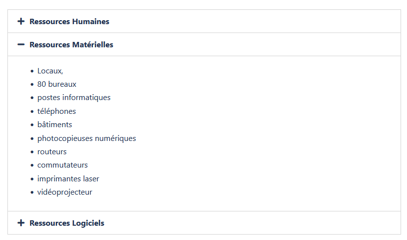

DEFINITION DU BESOIN
--- M2L ---
La Maison des Ligues de Lorraine (M2L) a pour mission de fournir des espaces et des services aux différentes ligues sportives régionales et à d’autres structures hébergées. La M2L est une structure financée par le Conseil Régional de Lorraine dont l'administration est déléguée au Comité Régional Olympique et Sportif de Lorraine (CROSL).
LA MISSION POUR CE PROJET
Nous devions créer un site Wordpress pour la M2L
Mon travail
Accueil
Ligues hébergées
Services
Contact
Formulaire
COMPÉTENCES
Gérer le patrimoine informatique▸Exploiter des référentiels, normes et standards adoptés par le prestataire informatique.
▸Mettre en place et vérifier les niveaux d’habilitation associés à un service.
▸Vérifier les conditions de la continuité d’un service informatique.
▸Gérer des sauvegardes.
▸Vérifier le respect des règles d’utilisation des ressources numériques.
Développer la présence en ligne de l’organisation
▸Référencer les services en ligne de l’organisation et mesurer leur visibilité.
▸Participer à l’évolution d’un site Web exploitant les données de l’organisation.
Organiser son développement professionnel
▸Mettre en œuvre des outils et stratégies de veille informationnelle
▸Gérer son identité professionnelle
▸Développer son projet professionnel
DEFINITION DU BESOIN
--- FESTIVAL ---
La Maison des ligues organise un festival de sports nature en septembre, le festival Sp’Or, et ne dispose pas d’application pour gérer l’hébergement des participants à ce festival. Chaque ligue pourra y inscrire des participants et/ou des équipes (des tournois ou des matches seront organisés) et tenir un stand de présentation de la ligue pendant 15 jours.
Les établissements scolaires de la région vont mettre à disposition de la M2L des chambres pour l’hébergement des personnes participant au festival.
Un ami de Mr Duchemin lui a procuré le dossier et le code d’une « vieille » application permettant de gérer les hébergements dans le cadre d’un autre festival (musique folklorique en Bretagne).
Vous êtes chargé de tester cette application, de la corriger et de l’adapter au contexte de la M2L. Cette application est développée en Php, en HTML et CSS. Vous pourrez modifier le design afin qu’il soit agréable. La navigation doit être claire et intuitive.
LA MISSION POUR CE PROJET
Tester et adapter une application existante.
Voici le site à modifier :
- Établissements à modifier
- Attributions à modifier
Pour voir le projet complet : FestivalInit (zip : 2.33Mo)
Mon travail
Lien vers mon projet Github : Festival sous la forme MVC
COMPÉTENCES
Développer la présence en ligne de l’organisation▸Référencer les services en ligne de l’organisation et mesurer leur visibilité.
▸Participer à l’évolution d’un site Web exploitant les données de l’organisation.
Travailler en mode projet
▸Planifier les activités
▸Évaluer les indicateurs de suivi d’un projet et analyser les écarts
DÉFINITION DU BESOIN
--- PERSONNEL ---
Les niveaux d’habilitation des utilisateurs sont les suivants :
- Un simple employé de ligue peut ouvrir l’application et s’en servir comme un annuaire, mais il ne dispose d’aucun droit d’écriture.
- Un employé par ligue est admininstrateur et dispose de droits d’écriture peut gérer la liste des emloyés de sa propre ligue avec une application bureau.
- Le super-admininstrateur a accès en écriture à tous les employés des ligues. Il peut aussi gérer les comptes des administrateurs des ligues avec une application accessible en ligne de commande.
- L’application doit être rendue multi-utilisateurs grace à l’utilisation d’une base de données.
- Les trois niveaux d’habilitation ci-dessus doivent être mis en place.
LA MISSION POUR CE PROJET
Itération 1 :
Itération 2 :
Itération 3 :
Mon travail
Documentation :
Lien vers mon projet Github : Personnel
COMPÉTENCES
Développer la présence en ligne de l’organisation▸Traiter des demandes concernant les services réseau et système, applicatifs.
▸Traiter des demandes concernant les applications.
Répondre aux incidents et aux demandes d’assistance et d’évolution
▸Traiter des demandes concernant les services réseau et système, applicatifs.
▸Traiter des demandes concernant les applications.
DÉFINITION DU BESOIN
--- PARKING ---
- Le front-office doit être sécurisé et n’accepter que les demandes du personnel des ligues. Les inscriptions au service de réservation de place doivent être validées (ou créées) par un administrateur.
- L’administrateur, seul utilisateur du back-office, doit pouvoir éditer la liste des places et gérer les inscriptions des utilisateurs.
- Lorsqu’un utilisateur en fait la demande, une place libre lui est est attribuée aléatoirement et immédiatement par l’application, la réservation expire automatiquement au bout d’une durée par défaut déterminée par l’administrateur.
- Si une demande ne peut pas être satisfaite, l’utilisateur est placé en liste d’attente.
- L’utilisateur ne peut pas choisir la date à laquelle une place lui est attribué, les réservations sont toujours immédiates. Un utilisateur ne peut pas faire une demande de réservation s’il est en file d’attente ou qu’il occupe une place.
- Un utilisateur ou l’administateur peuvent fermer une réservation avant la date d’expiration prévue. Une fois celle-ci expirée, l’utilisateur doit refaire une demande s’il souhaite obtenir une place.
LA MISSION POUR CE PROJET
Il serait souhaitable que les fonctionnalités ci-après soient mises en place. Si vous n’avez pas le temps de toutes les traiter, occupez-vous d’abord des plus importantes. S’il reste du temps, cherchez des améliorations à apporter.
Sécurité :
Gestion des mots de passe :
Espace utilisateur :
Espace administrateur :
Pages web :
Documentation:
Accès depuis le réseau local :
Mon travail
Documentation :
Lien vers mon projet Github : Parking
COMPÉTENCES
Gérer le patrimoine informatique▸Exploiter des référentiels, normes et standards adoptés par le prestataire informatique.
▸Mettre en place et vérifier les niveaux d’habilitation associés à un service.
▸Vérifier les conditions de la continuité d’un service informatique.
▸Gérer des sauvegardes.
▸Vérifier le respect des règles d’utilisation des ressources numériques.
Répondre aux incidents et aux demandes d’assistance et d’évolution
▸Traiter des demandes concernant les services réseau et système, applicatifs.
▸Traiter des demandes concernant les applications.
Travailler en mode projet
▸Planifier les activités
▸Évaluer les indicateurs de suivi d’un projet et analyser les écarts
Mettre à disposition des utilisateurs un service informatique
▸Déployer un service
▸Accompagner les utilisateurs dans la mise en place d’un service
Organiser son développement professionnel
▸Mettre en œuvre des outils et stratégies de veille informationnelle
▸Gérer son identité professionnelle
▸Développer son projet professionnel
MISSION DE STAGE
--- 1er année ---
Vous participerez au processus de digitalisation des formations en intégrant sur les plateformes les contenus à destination des apprenants.
Les missions principales dans ce cadre sont :
(vidéos, images, quiz, documents PDF…)
(desktop et application mobile)
Mon travail
Voici quelques images de ce que j'ai pu effectuer lors de mon stage :
Aperçu du dashboard de l'entreprise avec les différentes actions possibles comme par exemple administrer les modules


Aperçu du dashboard de l'utilisateur, donc des apprenants qui peuvent par exemple voir leur progression.

Aperçu de l'intégration, ici, je devais crée des questions à l'aide d'un powerpoint réalisé par un relookeur en fonction des attentes du client, ces questions sont ensuite disponible après chaque vidéo de formation afin de vérifier que l'apprennant a bien saisie le contenu de la vidéo.

Aperçu des différentes étapes du processus de création, au cours de mon stage, j'ai également pu m'intéresser au relooking, au tournage et au montage et effectuer des recettages clients.
C pour création, S pour scénarisation, R pour relooking, T pour Tournage, M pour Montage, H pour Habillage Template, SL pour Habillage Slide, E pour Export, I pour Intégration et R pour Recettage Client.

Aperçu de la DropBox, un espace collaboratif dans lequel je récupérais toutes les vidéos pour les analyser, elles devaient respecter le relooking.
Pour plus d'informations sur le stage : Suite
COMPÉTENCES
Répondre aux incidents et aux demandes d’assistance et d’évolution▸Traiter des demandes concernant les services réseau et système, applicatifs.
▸Traiter des demandes concernant les applications.
Développer la présence en ligne de l’organisation
▸Référencer les services en ligne de l’organisation et mesurer leur visibilité.
▸Participer à l’évolution d’un site Web exploitant les données de l’organisation.
Travailler en mode projet
▸Planifier les activités
▸Évaluer les indicateurs de suivi d’un projet et analyser les écarts
Mettre à disposition des utilisateurs un service informatique
▸Déployer un service
▸Accompagner les utilisateurs dans la mise en place d’un service
MISSION DE STAGE
--- 2éme année ---
Développement Web d'une fonctionnalité pour une application de diagnostic d'incidents avec une partie Front en
Angular et une partie back en Java Spring Boot.
Contexte : Voici quelques images de ce que j'ai pu effectuer lors de mon stage :
Dans le cadre de la lutte anti-fraude, lorsqu’un email ou un numéro de téléphone mobile est modifié, l’application concernée par cette modification envoie un sms ou un mail sur l’ancien numéro / mail et sur le nouveau numéro / mail.
Cela engendre des appels d’inquiétude de personnes qui ne sont pas à l’origine de la modification, puis de notre service anti-fraude qui nous demande de vérifier.
Ainsi, dans l’application Digital Diag, nous souhaitons ajouter un nouvel onglet, permettant la recherche d’un numéro de téléphone et/ou d’un email dans certaines tables.
A noter que cette interface ne concerne que le périmètre Epargne GT Abeille et Afer.
Partie 1 - Interface de recherche :
Ce nouvel onglet sera nommé « Anti-fraude »
Sur cette page de recherche, nous avons besoin dans l’immédiat de 3 zones :
Partie 2 - Résultat de la recherche :
Lorsqu’on clique sur le bouton « Lancer la recherche », il faut aller lire dans 3 tables et restituer l’ensemble des champs de ces 3 tables en effectuant un tri décroissant sur une date.
Ces tables sont des sas de transit entre les Fronts CRM et le back office Epargne. On les appelle aussi, les tables des « Données Partagées ». Toutes les 15 minutes, un batch est lancé coté front et coté back office pour aller lire les mouvements et mettre à jour les bases de données.
Le plus simple et pertinent est de saisir un seul champ. Voici les requêtes à implémenter.
Une limite de 100 lignes est arbitrairement fixée pour ne pas remonter trop de données anciennes.
Partie 2.1 - Table front N°1 : CRM.fe_mvtcli
Requête Numéro de client :
select * from CRM.fe_mvtcli where mvt_cli_id = 10112666 and rownum < 100
order by mvt_enr_d desc ;
Requête Email :
select * from CRM.fe_mvtcli where mvt_mvt_c = 'email' and mvt_val like '%abeille@aviva.com' and rownum < 100 order by mvt_enr_d desc ;
Requête Numéro de mobile :
select * from CRM.fe_mvtcli where mvt_mvt_c = 'tel_portable' and mvt_val like '%0607080910%' and rownum < 100 order by mvt_enr_d desc ;
Partie 2.2 - Table front N°2 : dcce.dcc_mvtclioce
Requête Numéro de client :
select * from dcce.dcc_mvtclioce where mvt_cli_id = 10112666 and rownum < 100 order by mvt_enr_d desc ;
Requête Email :
select * from dcce.dcc_mvtclioce where mvt_mvt_c = 'email' and mvt_val like '%abeille@aviva.com' and rownum < 100 order by mvt_enr_d desc ;
Requête Numéro de mobile :
select * from dcce.dcc_mvtclioce where mvt_mvt_c = 'tel_portable' and mvt_val like '%0607080910%' and rownum < 100 order by mvt_enr_d desc ;
Partie 2.3 : Table back office N°1 : dcce.pc_bp_contact
Requête Numéro de client :
select * from dcce.pc_bp_contact where numero_pers = 10112666 and rownum < 100 order by numero_mvt desc;
Requête Email :
select * from dcce.pc_bp_contact where nom_zone = 'email' and valeur_zone like '%abeille@aviva.com' and rownum < 100 order by numero_mvt desc;
Requête Numéro de mobile :
select * from dcce.pc_bp_contact where nom_zone = 'tel_portable' and valeur_zone like '%0607080910%' and rownum < 100 order by numero_mvt desc;
Mon travail
Pour plus d'informations sur le stage : Suite
COMPÉTENCES
Gérer le patrimoine informatique
▸Exploiter des référentiels, normes et standards adoptés par le prestataire informatique.
▸Mettre en place et vérifier les niveaux d’habilitation associés à un service.
▸Vérifier les conditions de la continuité d’un service informatique.
▸Gérer des sauvegardes.
▸Vérifier le respect des règles d’utilisation des ressources numériques.
Répondre aux incidents et aux demandes d’assistance et d’évolution
▸Traiter des demandes concernant les services réseau et système, applicatifs.
▸Traiter des demandes concernant les applications.
Développer la présence en ligne de l’organisation
▸Référencer les services en ligne de l’organisation et mesurer leur visibilité.
▸Participer à l’évolution d’un site Web exploitant les données de l’organisation.
Travailler en mode projet
▸Planifier les activités
▸Évaluer les indicateurs de suivi d’un projet et analyser les écarts